Tutorial 2: Creating a Static Spray With Transparency
Our second tutorial is creating a static spray with transparency. Again, I will be using 256X256 resolution for full compatibility.
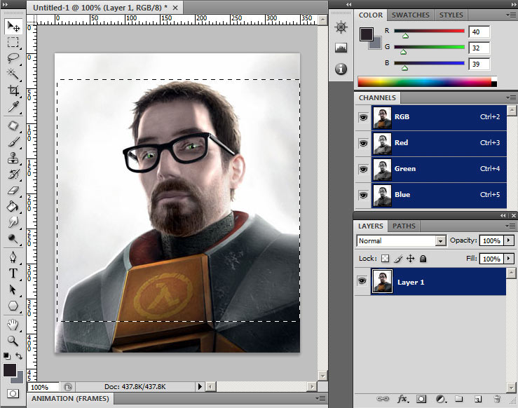
Open your image into photoshop and select a square region of what you want for your spray. To make a perfect square selection hold shift-leftclick and drag your area. Then go to Image menu and "crop".
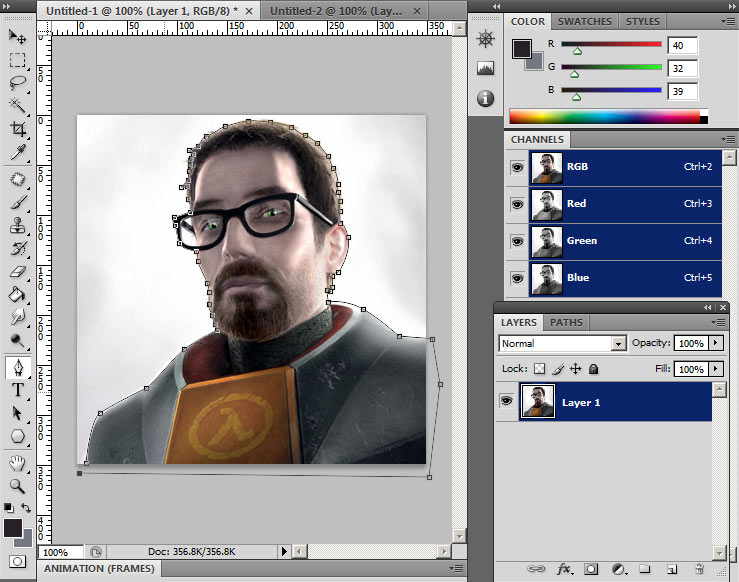
Cut out the image using whatever method you like (Magic wand, pen tool, Extract filter, colour range, etc). For this I am using the pen tool since it gives nice clean lines.
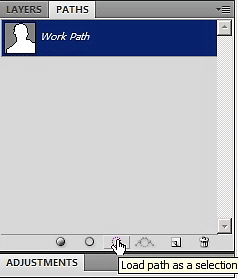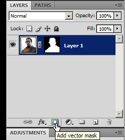
After using my pen tool, I selected the path under the Paths tab in the layer menu and held ctrl-leftclick on the path to get a selection. I then created a layer vector mask in the layers menu.
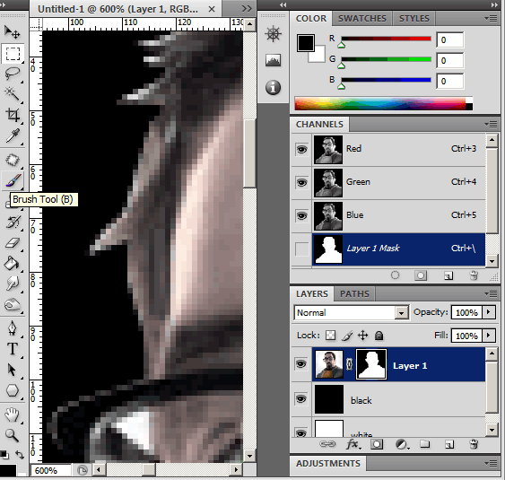Create 2 layers below the image. 1 layer filled with black, and another filled with white. This is what I use to check the edges to see if there is any spill or areas where there is a fine line of background. With the vector mask selected in the layers menu you can make manual adjustments by painting black or white with the brush tool. NOTE: I am not going to do too much mask editing to get rid of the white fringes since I will be using a quicker method that will only work when the mask is applied.
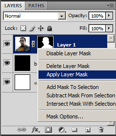Right-click the layer mask to get this menu. Select Apply the layer mask to cut the image out.
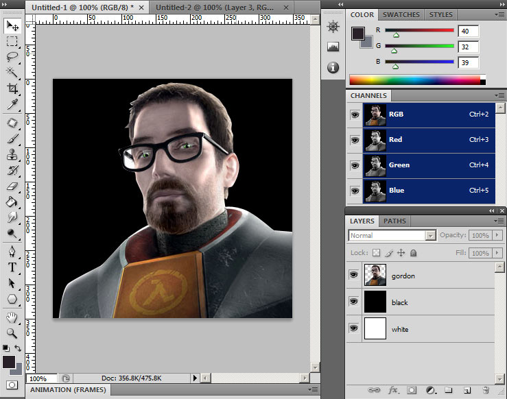
With the mask applied we will now do some final inspections and edge fringe removal. If you used magic wand, this step is more critical since magic wand has a nasty habit of leaving lots of little bits of white or whatever colour the background was. Hide the black layer to see what the image looks like against the white to see if there is any unwanted dark background areas you might have missed.
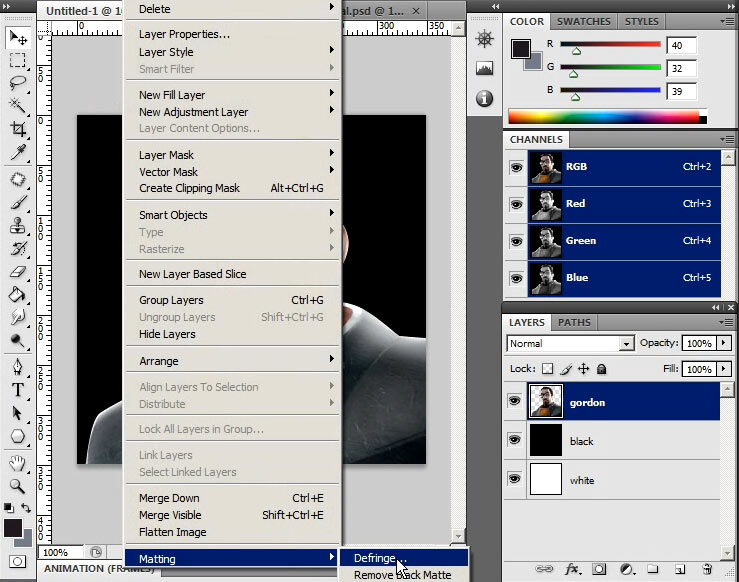
To quickly get rid of the white edges on the image, go to image>Matting>Defringe. Usually 1 pixel setting will do the trick and clean the edge. This is especially useful if you used magic wand.
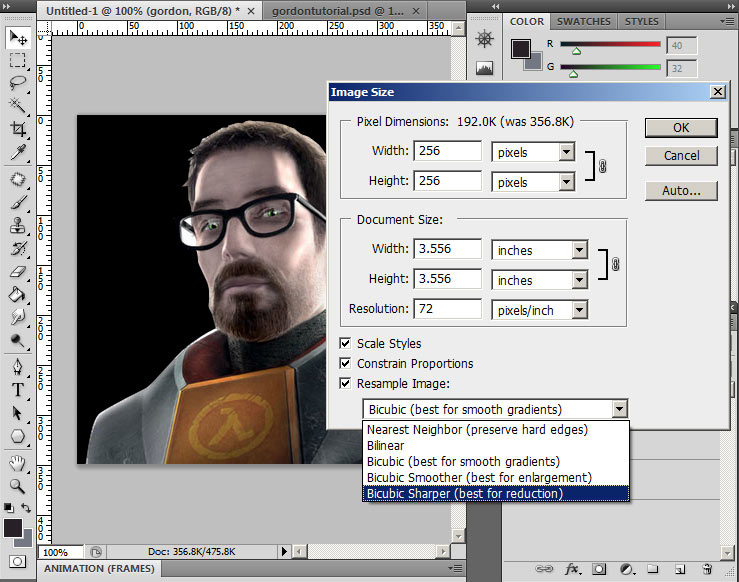
Go to Image menu again and select "Image size...". In this menu set the pixel dimensions to 256X256 (Note: If your image is not 72 pixels/inch resolution set it before setting the dimensions to 256X256). Under "Resample image" I like to set "Bicubic Sharper" since it scales better.
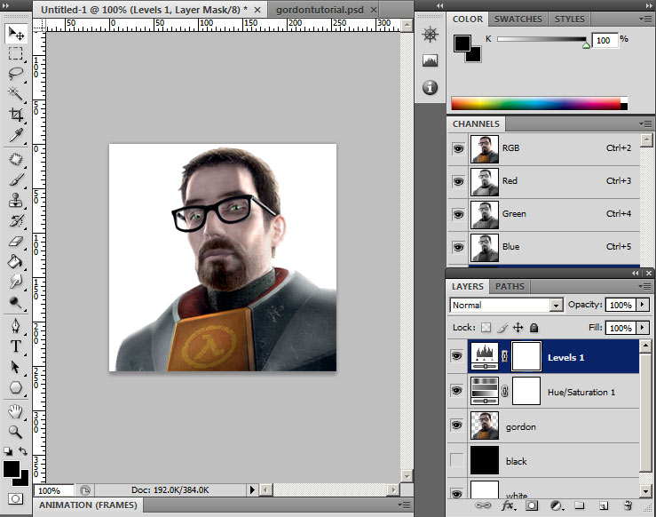
Here I am Adjusting the image with levels and hue&saturation with layer adjustments
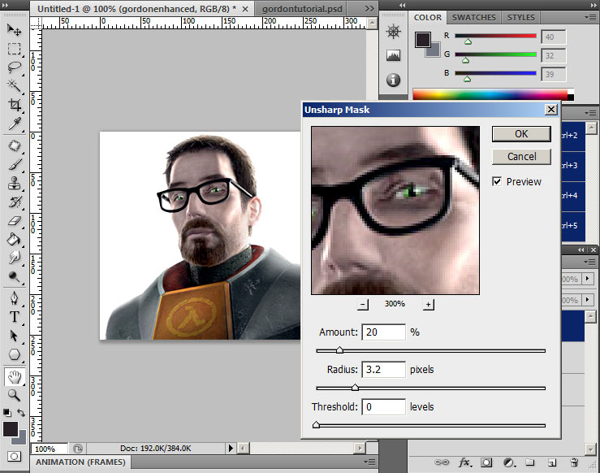
Here I am using the filter "Unsharpen Mask". As I mentioned before in the previous tutorial: Use of this filter depends on the image and personal taste. For enhancing fine detail use a smaller pixel radius, and for overall detail/contrast enhancing use a larger pixel radius. Play with the amount and threshold until you reach your desired sharpness. In general, spraylogos with more contrast&sharpness tend to look better because when the image gets converted to VTF, it gets compressed making image-artifacts (jpeg-looking blocks) in low-contrast areas.
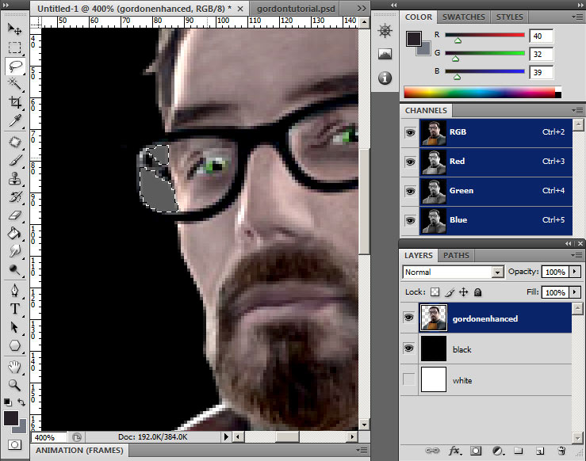
For a little added detail, I have selected the area of Gordons glasses and deleted the lens area. I filled the area with white at about 15% opacity. This will make his glasses mostly-transparent and give a nice effect when spraying this logo.
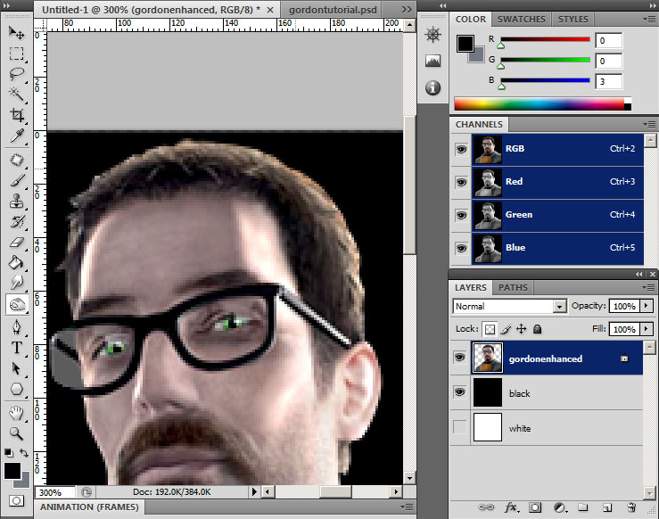
I have done a few last touchups on the spray, with focus on the hair. I selected the layer and hit the "lock transparency" icon on the layers menu so I only affect the image and not disturb the transparent area. I used a combination of clone stamp on the edge of his hair and the burn tool to remove some of the white light on his hair. I also fixed part of his glasses. Once done I unlocked the layer.
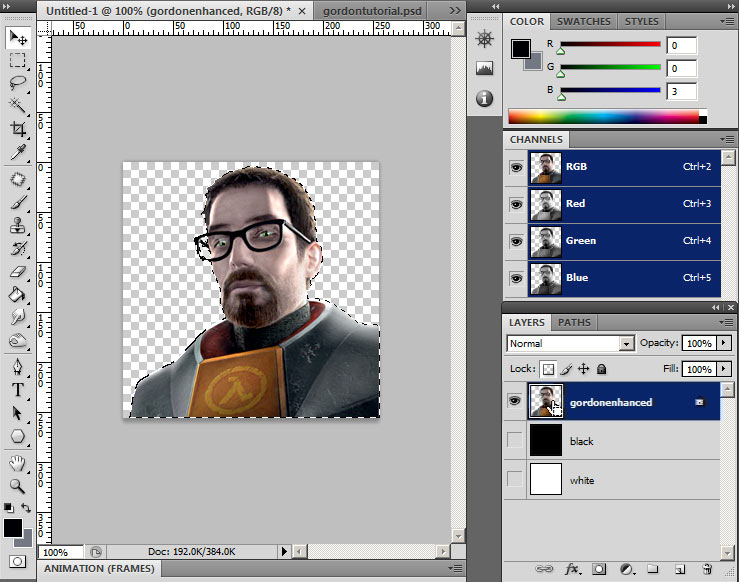
Hold Ctrl-click on the layer icon to pull up a selection of the image.
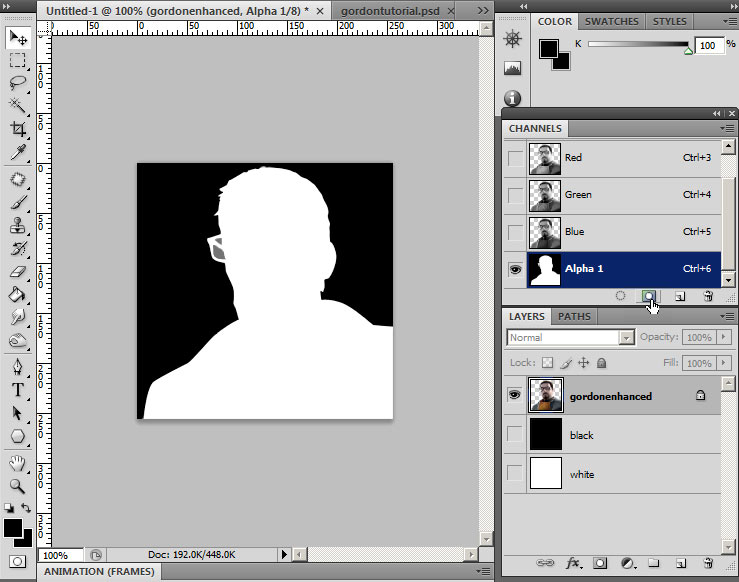Now click the mask icon on the channels window to turn the selection into an alpha channel.
Before we proceed...
Now we are done with the image and ready to save, however I want to take a moment to go over a little issue with transparency in the game.
You see, transparency masks are not perfect in game due to several factors such as scaling, filtering & graphics settings so we run into a little misalignment of the image and the alpha channel. Now photoshop and many other programs will save base image area where the transparent area is supposed to be to white. This creates a problem which can be seen here:
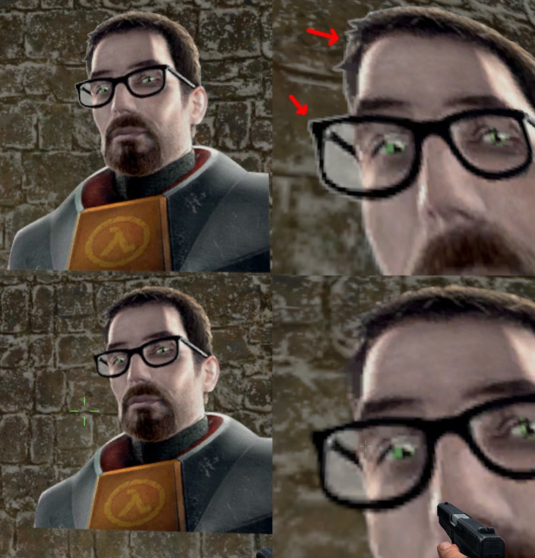Now you see how there is that ugly white fringe around Gordon's glasses and hair? That's what I'm talking about. Now in the bottom image you can see that there is no fringe. I fixed this problem from one of 2 ways:
A TGA with a manually created "bleed"
or
A PNG saved image
Now there are pros and cons to both methods. The TGA way takes some more time but you have more control and more guaranteed results. The PNG way is much faster, but it doesn't always work properly. Personally I prefer the TGA way and I will show how. In the TGA method, I made 4 layer copies of the original image and put them below on the layer order. I nudged each one 1 pixel to a direction. 1 to the left, 1 to the right, 1 to the top and one to the bottom. This creates an extended edge. Lastly I create a bottom layer filled with 50% grey (but most times I use black).
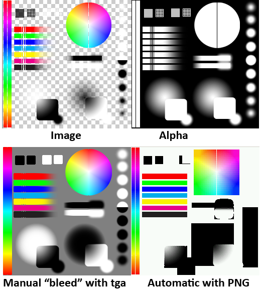As seen here I have the main image and alpha channel of these colours on top and on bottom what the base image looks like with both methods. Now when saving as PNG you don't use the alpha channel, just have your cutout image with nothing underneath and save as PNG. To display the bleed the PNG saving created I screenshotted it from VTFEdit with the mask removed to reveal underneath.
Now what am I doing with these test images? Im demonstrating how the PNG method has its faults:

This is why I prefer making the bleed with TGA because as good as PNG sometimes works, in other cases like this spraytest it screwed up on some of the edges. Now we can continue.
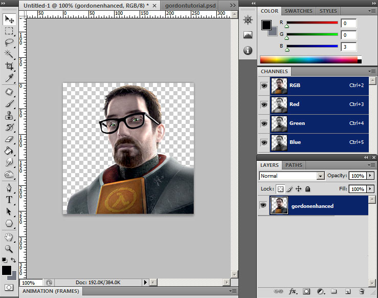
Now for using the PNG method, simply clear all other layers until you just have your image like so. Then just save it as PNG and you are done with it.
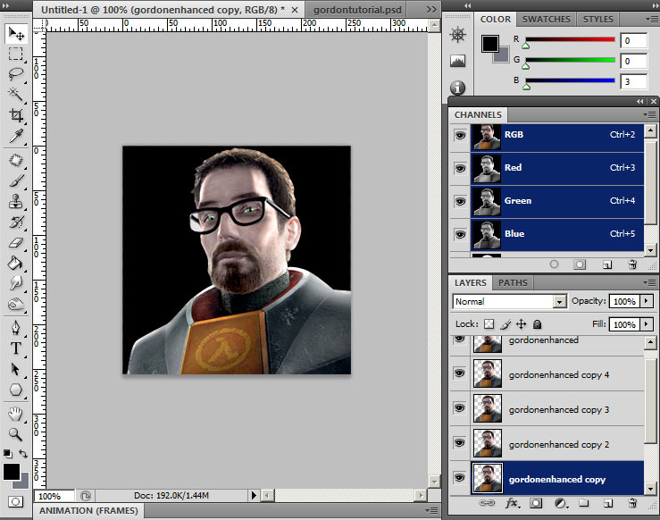
Now for using the TGA method, Duplicate your main layer 4 times and place them under your main image layer. With the move tool selected, move each of the 4 layers 1 pixel in the following directions. Left, right, up & down. Lastly, make the black layer at the bottom visible. NOTE: If your spray is lineart with pure black edges or uses a black drop-shadow; you can skip with copying the layers and just use the black bottom layer (or make it the solid colour of the edges of whatever your image is).
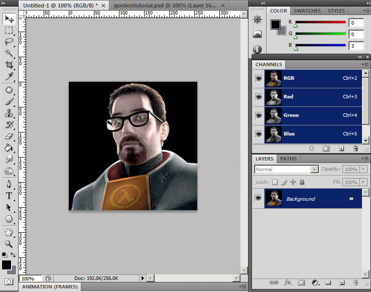
Flatten the layers. You now have an image with bleed with an alpha channel.
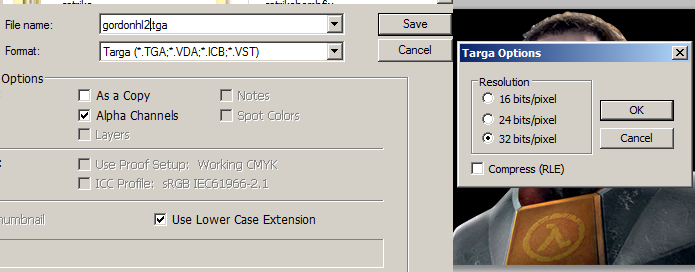You can now save it as a TGA file at 32 bits (If it defaults to 24, cancel & check to see if your alpha channel is there).
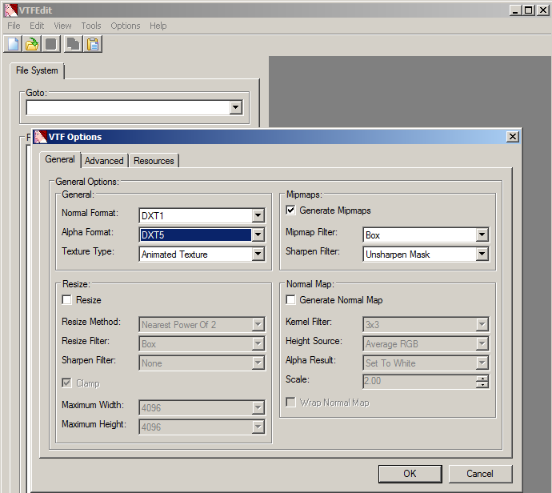
Open up VTFEdit and go to File>Import. Import your saved targa file. You will get this menu which is the options for conversion from targa to VTF. On your left set the "Alpha Format" to "DXT5". DXT5 is the image format that uses an alpha channel. On the right is "Generate Mipmaps". As stated in the introduction, mipmaps create smoother looking images at distances and scaling so we are gonna want this box checked. By default the mipmap sharpen filter is set to "sharpen soft" which is overall great, but looks a little off with some images (especially with line-art imagery) and you have no control. I personally use "Unsharpen Mask" since VTFEdit gives you the option to adjust the settings manually in the next tab.
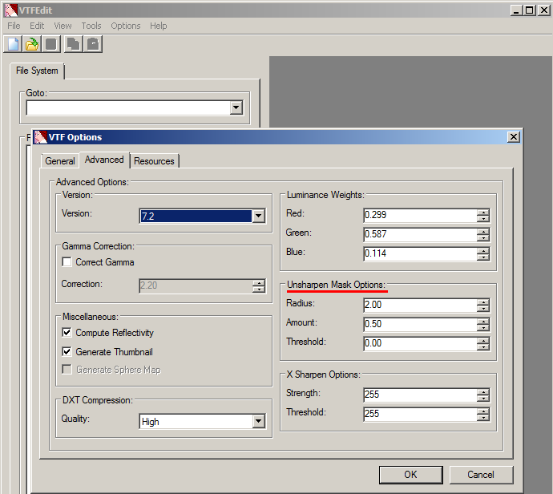
In the advanced options tab we have the Unsharpen Mask options, however there is no real-time preview like in photoshop so your gonna have to do a bit of guessing. As for VTF version, you should have it a low version like 7.2 since some older source games are not able to read 7.3+ versions of VTF files. The version does not affect image quality. The versions are only really important for other ingame textures with things like spritesheets and other resources, so it does not matter in our case.
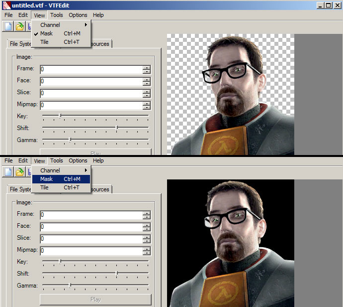
Here we have our imported TGA file. From the "View" options you can uncheck "mask" which reveals the base image without the transparent mask.
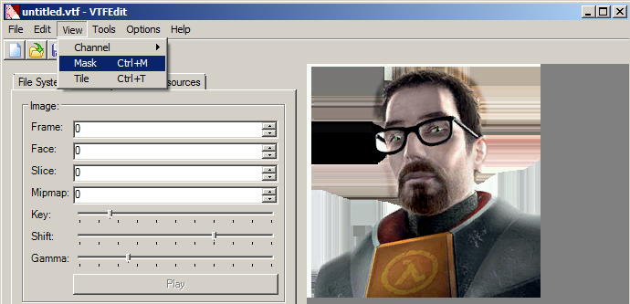If you used a PNG, it will probably look something like this. This PNG edgebleed seemed to have worked like it should (and tested ingame worked fine). Again, use of PNG is a roll of the dice to see if it works properly or not.
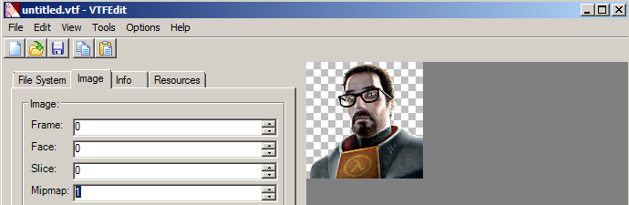
If we select the mipmap number and use the up and down arrow keys, we can cycle through the mipmap images. If you are not satisfied with how your sharpening went, go and import your tga again and adjust the mipmap sharpening options. When done inspecting, set it back to 0 (full image).
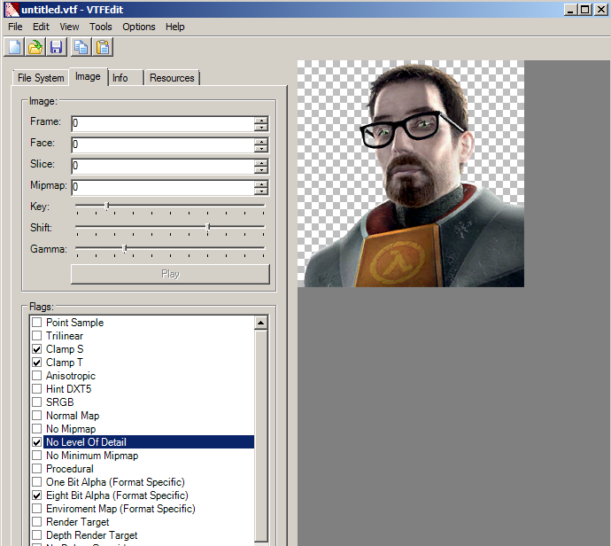
We will now se the image flags. Clamp S & Clamp T keep the image edges from "wrapping" around and giving a thin line at the top, bottom, left & right of the image. If you do NOT check these flags, this is bound to happen:
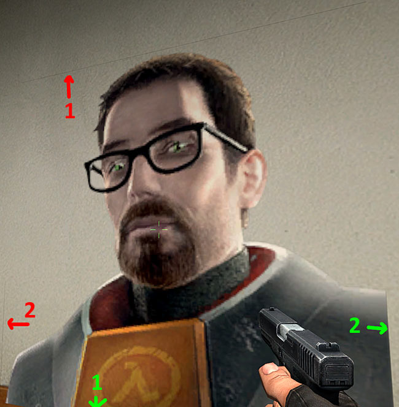
As you can see the parts of the image touching the boundaries are repeating to the top and left. Lastly, No Level Of Detail is the most important flag you want to check. Without this checked, your sprays quality will be adjusted by the games texture resolution settings. Lastly, image flags can be set to existing VTF files and saved without having to recompile the image.
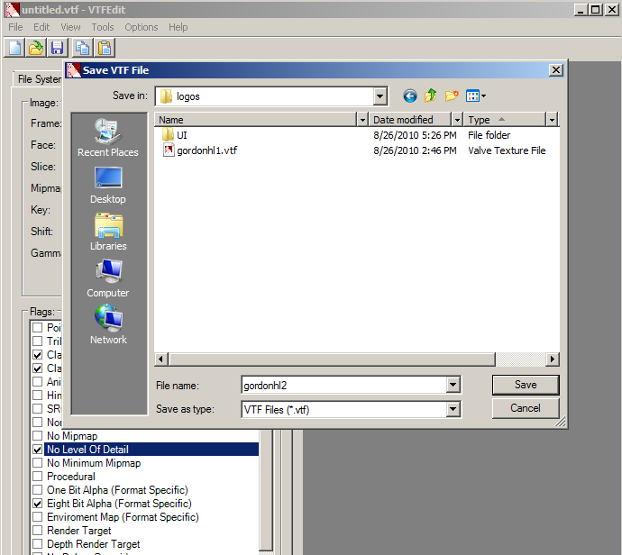
Save the image to your desired game's spraylogo directory. For the directories click here
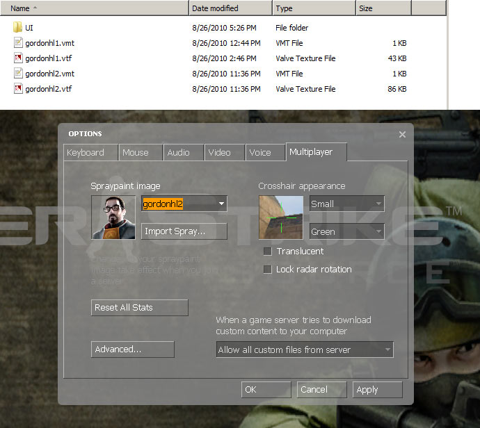
If done right, the spraylogo should turn out to 2 files: A VTF and a VMT. By default VTFEdit should have "Auto Generate VMT file" under the Options menu. If you don't have a vmt, the game will not read the texture. When you launch your game, go to the multiplayer tab and select your spray from the drop-down menu.

Now here is your finished spray in game!